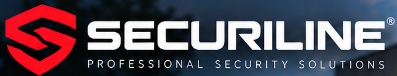
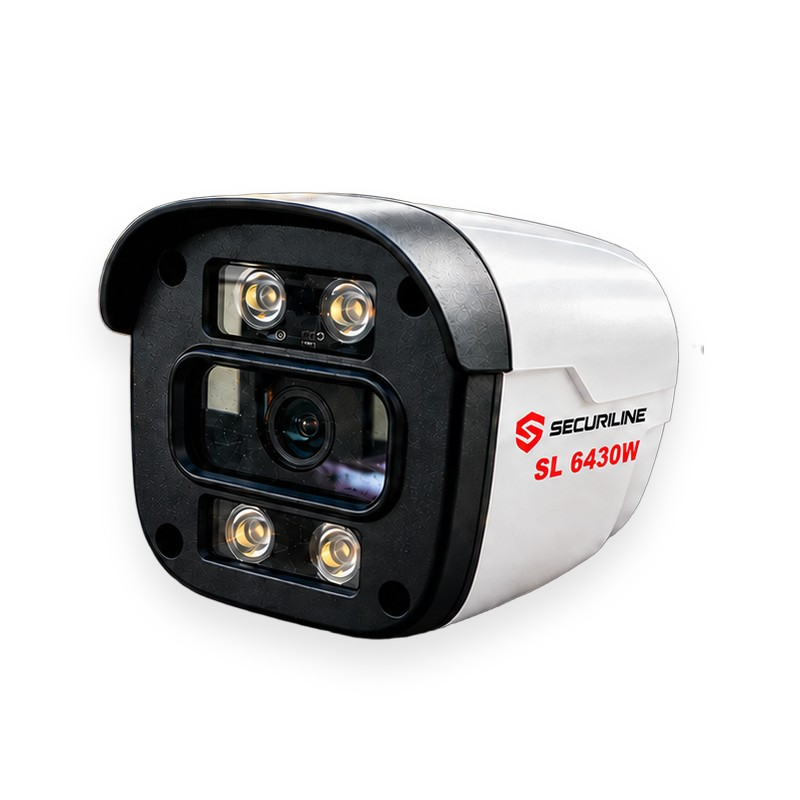
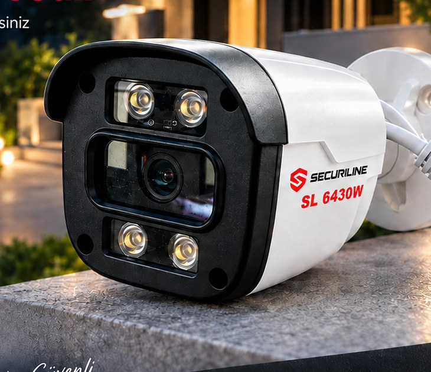

Gece/gündüz renkli görüntü (Full Color), PoE tek-kablo bağlantı, IP66 dış mekân koruması, mobil uygulama ile uzaktan erişim ve anlık bildirimli hareket algılama sunan bullet tipi IP güvenlik kamerası.
Model adı varyantları: SL 6430W / SL6430W / SL-6430W

| Marka | Securiline |
| Model | SL 6430W |
| Ürün Kodu | SL6430W |
| Kamera Tipi | IP Bullet Kamera (dış mekân) |
| Çözünürlük | 4MP Ultra HD (2560×1440) |
| Gece Görüşü | Full Color — sıcak beyaz LED aydınlatma (gece renkli görüntü) |
| Güç / Bağlantı | PoE (Power over Ethernet) / Network RJ45 |
| Koruma Sınıfı | IP66 (su ve toza dayanıklı) |
| Uzaktan Erişim | Mobil uygulama (iOS / Android) ile canlı izleme |
| Akıllı Özellik | Hareket algılama + anlık bildirim |
| Gövde / Renk | Beyaz gövde, siyah ön panel, duvar montaj aparatı |
| Kullanım Alanı | Ev · İş Yeri · Site · Fabrika |
| Garanti | 2 yıl (yasal garanti) |
| Fiyat | 4.500 TL |
